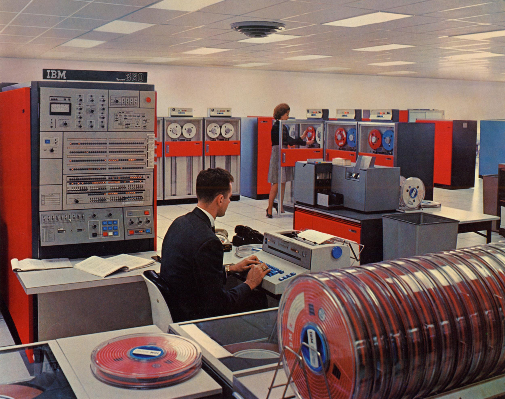
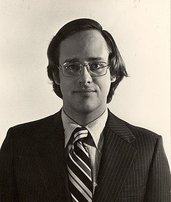

# Méthodes agiles <br> ## Process et méthodes de développement logiciel <br> <br> #### Mines Paristech #### 09 / 03 / 2020
## Objectifs - Agile: qu'est-ce que c'est ? D'où ça vient ? - Pourquoi c'est important ? - Comment en parle-t-on dans le monde ? - Comment l'appliquer en projet à l'école ?
## Plan 1. Introduction 2. Historique des projets logiciels et des méthodos 3. Philosophie de "l'agilité" 4. Quelques exemples de Méthodes Agiles™ 5. Exercice pratique
## Daniel Garnier-Moiroux <img src="images/profile_picture.jpeg" id="profile-pic"> <br> Software Engineer @ Pivotal Labs [@Kehrlann](https://twitter.com/Kehrlann) https://github.com/Kehrlann
## Aujourd'hui, du logiciel partout <img src="images/issues_de_secours.png" height="600px">
# Historique des projets logiciels
## Premiers ordinateurs <!--Dès les années 31-40, avec un boom pendant la guerre.--> <img src="images/colossus.jpg" height="900px">
## Premiers programmes
## "Software crisis" <br> > The major cause of the software crisis is that the machines have become several orders of magnitude more powerful! To put it quite bluntly: as long as there were no machines, programming was no problem at all; when we had a few weak computers, programming became a mild problem, and now we have gigantic computers, programming has become an equally gigantic problem. > > — Edsger Dijkstra, The Humble Programmer (EWD340), Communications of the ACM (1972)
## Quelques statistiques A votre avis, combien de projets logiciels sont: - Des réussites ? - Des échecs complets ?
## Standish Group "Chaos Report"
## Quelques statistiques - En 1980: coût de développement = moitié du coût opération + maintenance - En 1995: 50% des projets sont opérationnels, mais pas "réussis" - Toujours pareil en 2015 - Projet moyen: +50% de budget
## IBM System/360 
## IBM System/360 <!-- - 1963 à 1966 - Budget initial: $25M - Coût total: > $5B - Équipe initiale: ~75 personnes - Au pic d'activité: > 1000 personnes - Plus d'un an de retard <br> <br> --> > Ajouter des développeurs à un projet en retard aggrave le retard > > Fred Brooks, "The Mythical Man-Month", 1975
# Historique des méthodologies
## 1960s "software engineering" <img src="images/margaret-hamilton.jpg" height="900px">
## 1970: "Managing the development of large software systems" Article publié par Winston W. Royce, directeur de "Lockheed Software Technology Center" 
## 1970: "Managing the development of large software systems"
## 1970: "Managing the development of large software systems" > I believe in this concept but the implemention described above is risky and invites failure. > > Winston W. Royce
## 1970: "Managing the development of large software systems"
## Une variation: le cycle en V TODO: image cycle en V
## Méthodologies plus légères - A partir de 1995-2000 - En réaction, naissance de méthodes plus simples - Moins théoriques - Portées par des _développeurs_ eux-même
## Scrum (1995) <!--- D'abord pour le développement de produits - 1986, "The New New product development game", HBR, Takeuchi & Nonaka - Innovation en continue, de manière incrémentale - 1995, Ken Schwaber & Jeff Sutherland présentent "Scrum development process" à [OOPSLA '95](http://jeffsutherland.com/oopsla/oo95wrkf.html) - 2001, livre "Agile software development with Scrum", Schwaber & Beedle--> - Idée principale: des développements **itératifs** TODO: photo livre Scrum
## eXtreme Programming (XP) Explained, _Embrace Change_ (1999) <!--- Sous-titre "embrace change" - Idée: prendre les pratiques qui fonctionnent, et les pousser à l'extrême - Exemple: tests -> TDD - Exemple: revue de code -> pair programming--> - Idée principale: des **valeurs**, pour organiser une équipe de développement TODO: photo livre XP